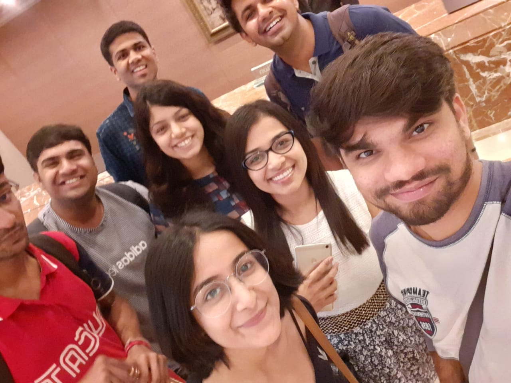

Want a sneak peek of the Investment Banking Sector?
Get all your queries cleared, right here.
8 min read

Q. Who are you?
Ans: I have interned at Deutsche Bank Center(DBC), Goregaon East, Mumbai after my fourth year. I am a
student of Industrial and Systems Engineering department enrolled in its dual degree course with
M.Tech. in Financial Engineering.I am a boarder of Patel Hall of Residence.My previous internships
include research internship at Indian School of Business, Hyderabad in the field of Quantitative
Finance and served as a research affiliate at the University of Huddersfield, England in Supply
Chain Management with Financial risk measures.
Q. What is the Selection Procedure?
Ans: It has 2 stages.
First, the online test which includes questions from data interpretation and verbal reasoning.
Shortlist depends upon the performance in the online test as well as CV.
The second stage has Personal Interviews. I had appeared for 5 different rounds with different panels.
First 2 were for checking Quantitative Aptitude followed by 1 round on CV. One with HR and finally
with the Director.
Q. How to prepare for them?
Ans: You can prepare for Quantitative Attitude from the book named "Heard on the Street". In Finance,
basic topics like Capital Market, Money Market, basic financial instruments and their derivatives, and
Risk measures can be covered. Probability and Statistics in Engineering by Williams W. Hines is a
good source for the foundation of Probability and Statistics.
Q. What were the Project Details?
Ans: I have worked with Quantitative Investment Solutions(QIS) team at DBC. My project was based on
the interest rates market and the forex market. I have studied the research and backtested 2 different
strategies to form portfolios for investors like pension funds and asset managers. I was supporting the
London desk of the QIS business. I was constantly in touch with my onshore team for my project
discussion. Along with my project, I was involved in helping the team members in their day to day
activities like calculating risk/return attribution and generating market data. I have also worked on
automating the return attribution to reduce the time(cost) and increase efficiency. Majorly my work
was on python and a little bit on MS excel.
Q. How was the Company culture?
Ans: DB offers a very structured internship in the field of Investment Banking. We were allotted a Project
Guide, a Mentor, and a buddy for project work guidance. They were easily available on the floor which
helped me a lot to solve my problems at the earliest. There were various information sessions by the
top management for the interns in which they used to discuss their involvement, their desk works, and
the future opportunities. They could also explain to us some basics on financial markets. On top of all
these, DBC has almost all businesses that Deutsche Bank offers. The best thing about interning at
DBC is the opportunity to interact with people from all of these businesses. It is very important to get
to know about all of it before you select your profile/job.
Q. Who should ideally apply for the internship?
Ans: Anyone who wants to give Investment Banking a try. This internship does not require any prior
knowledge in Finance. But having it definitely helps a lot during the internship.
Q. Any advice?
Ans: Start preparing hard on the topics mentioned. Be aware of the recent news in this field. If you claim it,
they gonna ask you in the interview.